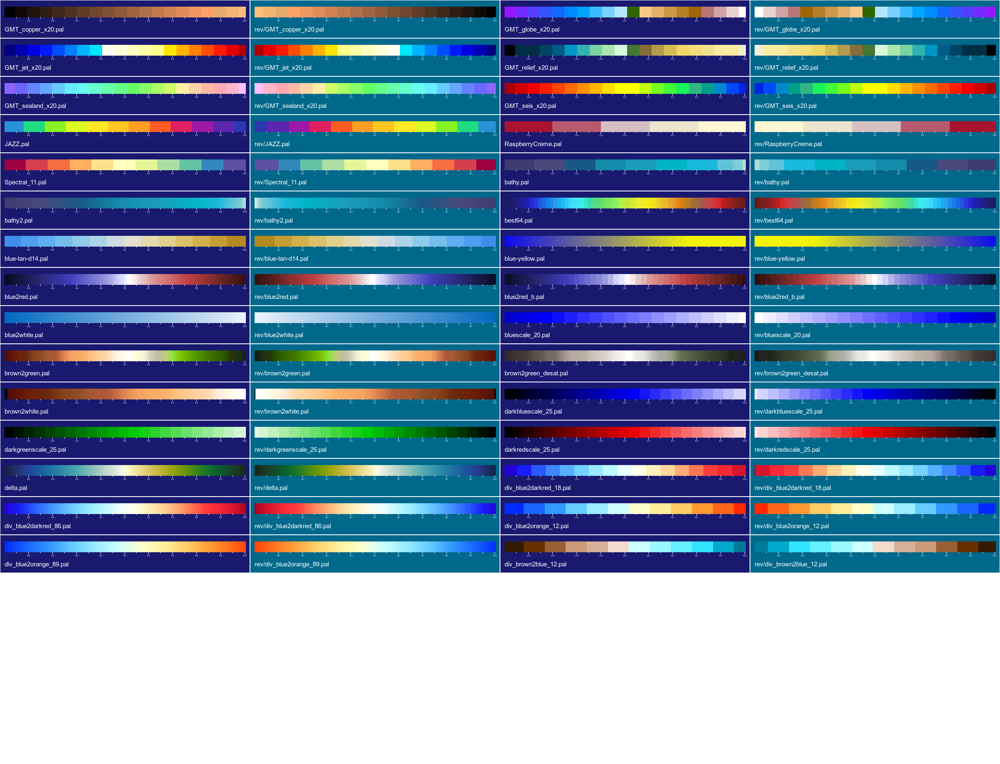
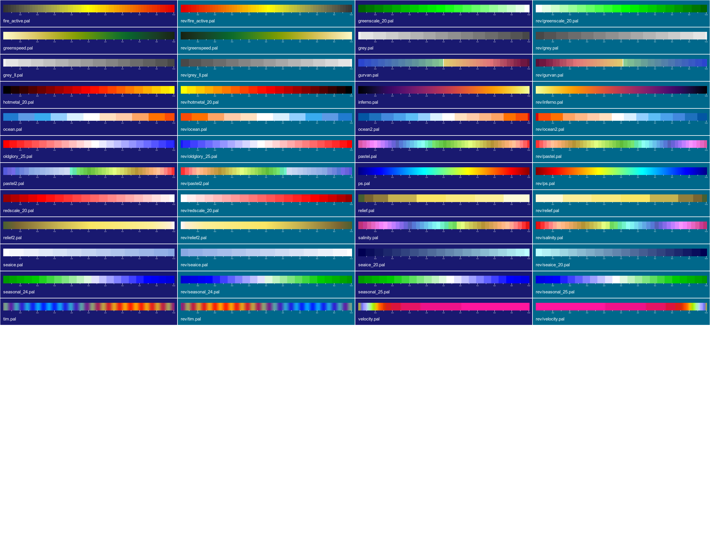

NEMOSIM - User Manual¶
Overview¶
nemosim reads horizontal slices of NEMO ocean model data and produces a bitmap image of the data according to the controls imposed by the command-line arguments. These arguments provide a fair degree of control over the final image including:
- Geographical domain (default: global)
- Data range limits
- Image size
- Colour scale
- Optional data field to be overlaid or combined as a sum, difference, speed etc.
- Map projection ( (lon,lat) , Mollweide or orthographic )
- Optional logo placement
- Colour scale legend placement
- Optional date clock
- Optional additional annotation
- Input dataset format (NetCDF)
nemosim is built using the ImageMagick <http://www.imagemagick.org/> library which provides routines to manipulate images in a multitude of image formats. nemosim restricts output to high quality pngs or jpegs. In order to access font information (for annotations) nemosim needs to have access to an X server. This means the command must be run in a desktop environment where a valid X display is accessible. If “xclock” works then so will nemosim. Despite this minor restriction nemosim is ideally suited for incorporation into scripts thus automating the production of frames for animation.
nemosim will work from a single NetCDF file but the NEMO files do not generally contain the masking fields. Thus to overlay a meaningful land mask the model bathy_level dataset must also be supplied. This is normally called “bathy_level.nc” but each model configuration will have its own dataset. Access to this dataset is determined by:
- Disabling the land mask by using the
-nomaskoption - Providing a full path via the -bathy argument
- Providing a full path via the environment variable:
NEMOBATHYFILE. E.g.
export NEMOBATHYFILE=/home/Users/me/ORCA025/bathy_level.nc
nemosim can be run with a minimum number of command line arguments and should
make sensible choices for most parameters. Access to all settings is provided
via command-line arguments for refining images further. For fancier images the
list can get quite long and not particularly memorable. Fortunately, nemosim
will record the invoking command within the image as a comment field or within a
saved map file as a NetCDF global attribute. The creation command for any image
can be retrieved using the ImageMagick identify -verbose utility. A shell
script utility is provided to run this command and retrieve just the command
information in a well formatted manner:
$NSIM_ROOT/bin/rdimgcom mynemoimage.png
Synopsis¶
The full set of command line arguments is:
Usage: nemosim
[-as mapfile|image|cmdfile {}]
-f infile
-o outimage
-d dataset_name
[-usemap transform_mapping_file {}]
[-k k_level] {0}
[-spos colour_scale_position]{0} (0-8 valid)
[-cs colour_file] {pastel.pal}
[-limits data_min data_max]
[-crescale scale_factor_for_colourscale]
[-logsc]
[-f2 infile2]
[-d2 2nd_dataset_name]
[-k2] {0}
[-uv ]
[-diff ]
[-sum ]
[-overlay ]
[-nscombo ]
[-overi overlay_threshold_index] {2}
[-cs2 overlay_colour_file] {seaice.pal}
[-limits2 overlay_data_min overlay_data_max]
[-crescale2 scale_factor_for_overlay_colscale]
[-r i_size j_size] {720 400}
[-high] {1920 1080}
[-medium] {720 400}
[-low] {360 200}
[-sw bottom_left_degrees bottom_left_degrees] {0.0 -90.0}
[-ne top_right_degrees top_right_degrees] {360.0 90.}
[-cenl centreline_longitude] {300.0}
[-no_offset]
[-moll]
[-mcen centre_meridian] {300}
[-icosa]
[-conic]
[-mcen longitude of rotated pole] {300}
[-mlat latitude of rotated pole] {90}
[-ortho]
[-eu1 first_Euler_angle] {90.0}
[-eu2 second_Euler_angle] {90.0}
[-eu3 third_Euler_angle] {180.0}
[-ta offset_translation_angle] {0}
[-td offset_translation_distance] {0}
[-gsize globe_scale_factor] {80}
[-vdist viewpoint_distance] {10}
[-grid lon_spacing lat_spacing] {30. 15.}
[-gridstep lon_dot_spacing lat_dot_spacing] {0.125 0.125}
[-png]
[-transp_bg]
[-transp_fg]
[-jpeg]
[-fg image_foreground_colour]{white}
[-bg image_background_colour]{black}
[-abg alternative image_background_colour]{gray}
[-bfg border_foreground_colour]{white}
[-bbg border_background_colour]{black}
[-margins left right bottom top]{0 0 0 0}
[-Margins left% right% bottom% top%]{spos dependant}
[-smargins left right bottom top]{0 0 0 0}
[-Smargins left% right% bottom% top%] {spos dependant}
[-dateclk clock_radius ck_xpos ck_ypos datestr]
[-logo logo_image_file]
[-lsize logo_width logo_height
[-lpos logo_xpos logo_ypos]
[-annotate xpos ypos label_text]
[-afs annotation-font-size] {11}
[-title title_text]
[-tpos title_xpos title_ypos
[-tjus title_text_justification]
[-tfnt title_font ]
[-tfs title_font_pointsize]{12}
[-stitle scale_title_text]{var_name}
[-stpos scale_title_xpos scale_title_ypos
[-stjus scale_title_text_justification]
[-stitle2 2nd_scale_title_text]{var2_name}
[-stpos2 2nd_scale_title_x 2nd_scale_title_y
[-stjus2 2nd_scale_title_text_justification]
[-stfnt scale_title_font ]
[-stfs title_font_pointsize]{10}
[-sfnt scale_font ]
[-sfs scale_font_pointsize]{9}
[-bathy bathy_level_file]
[-coordf coordinate_file]
[-nomask]
[-bcoord]
[-q]
[-cice]
[-nooverl]
[-xdim longitude_dimension_name]{x}
[-ydim latitude_dimension_name]{y}
[-np omp_num_threads]
[-t netcdf_time_level]
[-box]
[-usemax]
[-usemin]
[-rpt report_level]
[-show]
[-info]
[-verbose]
Formally, only the first three are essential (as indicated by the absence of []
brackets); but even those are not required if making use of the -as option
(see section on Command inheritance). Where set, the built-in defaults are
shown in {}. Many other defaults will be set dependent on other choices. For
examples in the absence of explicit data limits the dataset minimum and maximum
vaules will be used. All the other options can be used to override the automatic
choices.
Option reference¶
Each option is explained in the following sections which include examples for illustration:
Mandatory options
- -f infile
- An input NetCDF file name must be supplied.
- -o outimage
- An output image filename must be supplied.
- -d dataset_name
- The “short name” of the dataset to be extracted and displayed. Names containing spaces must be quoted; e.g. “POTENTIAL TEMPERATURE (MEAN)”.
Component options
- -as mapfile|image|cmdfile
- nemosim is able to extract previous command strings from either: pixel to ij
mapping files (see -usemap); other images created by nemosim or ascii text files.
Without any additional arguments this will recreate the original image produced by
the command (overwriting any existing image of the same name). Additional arguments
will replace any occurrances of the same option appearing either in the input
command record or preceding in the supplied list. Thus:
nemosim -as existing.png -o newcopy.pngwill create a copy of the existing image completely from scratch. This is the only option that avoids the need to provide the three, otherwise, mandatory arguments. Note, extracting command strings from nemosim generated images is done by running the ./bin/rdimgcom script and writing the results to a temporary file. If the compiler does not support the Fortran 2008 standard EXECUTE_COMMAND function (Gfortran 4.8 or later) or the program cannot create the temporary file, then the user is prompted to run these steps manually and create an ascii cmdfile. Running with a mapfile should always work since the command is stored as a NetCDF attribute. - [-k k_level] {0}
- The level to be extracted from a 3D dataset. This value should be 0 for 2D datasets.
- [-cs colour_file] {pastel.pal}
- The name of the colourscale to use. Current options are: pastel.pal, pastel2.pal, ps.pal, seaice.pal, best64.pal, blue2red_b.pal, blue2red.pal, brown2green.pal, brown2green_desat.pal, brown2white.pal, tim.pal, blue2white.pal, relief.pal, bathy.pal, velocity.pal
- [-limits data_min data_max] {}
- The data limits over which the 252 colours of the colour scale are applied. Values less than the minimum will be assigned the first colour in the scale. Values greater than the maximum will be assigned the last colour in the scale.
- [-crescale scale_factor_for_colourscale]
- use the supplied scale factor to rescale the units displayed on the main colourscale.
- [-logsc]
- Use the log (base 10) of the main variable for plotting. Range limits supplied to the -limits option should be limits for the log values. Currently only the main field (either direct values or combined via the -combo options) can be treated. Overlay fields (supplied via the -over options) are not affected by this option.
- [-f2 infile]
- An optional input file name giving the location of a 2nd component dataset. If**-d2**is used without this option then the 1st component datafile is assumed to also contain the 2nd component.
- [-d2 2nd_component dataset]
An optional 2nd compoent dataset which can be combined with the first component dataset to produce either: a sum, difference (1st - 2nd) or a speed (sqrt(1st^2 + 2nd^2)) field.
- [-k2 k_level] {0}
- The level to be extracted from a 3D dataset for the second component. This value should be 0 for 2D datasets.
- [-uv]
- Combine the 2 components as a speed field (sqrt(1st^2 + 2nd^2)). This one works best with the -logsc option.
- [-sum]
- Calculate and plot the sum of the 2 components.
- [-diff]
- Combine the 2 components as a difference field (1st - 2nd).
- [-nscombo]
- Combine the 2 components as a North-South hemisphere composite. The 1st field is plotted in the Northern hemisphere and the 2nd in the Southern hemisphere.
- [-overlay]
Overlay the second dataset on the first. The mechanism is crude and happens in pixelspace but it can be used to overlay fields which overlap only in confined areas. The most useful examples of these are the seaice fields. The named dataset must be present in the original input files.
- [-overi overlay_threshold_index] {2}
- The threshold colour index. Only pixels in the overlay image with a colour index greater than this value will be mapped onto the combined image. Thus the degree of masking achieved by the overlay field is controlled by the combination of the overlay data limits and the overlay threshold index.
- [-cs2 overlay_colour_file] {seaice.pal}
- The colour file applied to the overlay field (monochromatic scales work best)
- [-limits2 overlay_data_min overlay_data_max] {}
- The data range limits for the overlaid field
- [-crescale2 scale_factor_for_2nd_colourscale]
- use the supplied scale factor to rescale the units displayed on the colourscale for the overlaid field.
- [-r i_size j_size] {720 400}
- The image size in pixels. Note that the default horizontal colourscale legend will be placed in an additional stripe at the bottom of the image. The height of this additional area will be 15% of the supplied height. The (optional) vertical colour scale will occupy the left-hand 15% of the width and will overlay the underlying image.
- [-high] {1920 1080}
- Predefined image size giving a HD 1080p resolution image.
- [-medium] {720 400}
- Predefined image size giving a reasonable image suitable for animations
- [-low] {360 200}
- Predefined image size giving a small, low resolution image suitable for previewing or web use.
- [-sw bottom_left_degrees bottom_left_degrees] {0.0 -80.0}
- Optional restriction on the region to be displayed. The SW corner of the viewing window should be supplied in degrees E, degrees N.
- [-ne top_right_degrees top_right_degrees] {360.0 90.}
- Optional restriction on the region to be displayed. The NW corner of the viewing window should be supplied in degrees E, degrees N. Longitudinal values greater than 360. are permitted to allow regions which straddle the GM
- [-cenl centreline_longitude] {300.0}
- The longitude of the centre of the image. This is really only relevant to global regions which can be treated cyclically. Strange effects can happen if you fail to switch this off (-no_offset) with subglobal images.
- [-no_offset]
- Switch of the centreline positioning which assumes the image can be treated cyclically. This is applied automatically for Mollweide and orthographic projections.
- [-png]
- Force output image format to be PNG instead of JPEG. This happens automatically if the output filename ends with a .png extension. PNG format is lossless, compact and supports transparency.
- [-moll]
- Apply a Mollweide projection.
- [-mcen centre_meridian] {300}
- Set the longitude (degrees E) of the meridian running down the centre of the Mollweide ellipse.
- [-ortho]
Apply an orthographic projection. Essentially a “gplot” emulator without the interactivity. For anyone familiar with gplot the next 7 options are the same view controls that are set in gplot’s preview window. Everyone else will soon get the hang of it!
- [-eu1 first_Euler_angle] {90.0}
- E-W rotate in degrees E
- [-eu2 second_Euler_angle] {90.0}
- N-S rotate in degrees N
- [-eu3 third_Euler_angle] {180.0}
- Tilt angle in degrees
- [-ta offset_translation_angle] {0}
- Offset translation angle in degrees (only useful if you need to move the globe from the centre of the image)
- [-td offset_translation_distance] {0}
- Offset translation distance (in globe radii) (only useful if you need to move the globe from the centre of the image)
- [-gsize globe_scale_factor] {80}
- Globe scale factor. Decrease to zoom in; increase to zoom out
- [-vdist viewpoint_distance] {10}
- Viewpoint distance. Decrease to zoom in; increase to zoom out
- [-icosa]
- Map a global image onto the faces of an icosahedron. The resulting image can be cut-out, folded and glued to form a 3-dimensional solid.
- [-conic]
- An attempt to mimic the transformations necessary for a spherical display device. Only partially successful and still under development.
- [-mcen longitude of rotated pole] {300}
- longitude of the central point in the conic projection
- [-mlat latitude of rotated pole] {90}
- latitude of the central point in the conic projection
- [-dplace clock_radius ck_xpos ck_ypos datestr]
- Manually set the date clock radius and position (pixel coordinates). NEMO requires a 4th argument which is an eight character date string of the form YYYYMMDD. In scripts, this string can be provided by the nocstfinder utility.
- [-logo logo_image]
Apply a logo as determined by the size and placement options
- [-lsize logo_width logo_height]
- The pixel width and height of the logo.
- [-lpos logo_xpos logo_ypos]
- Pixel coordinates of the top lefthand corner of the logo.
- [-annotate xpos ypos label_text]
- Add an optional line of annotation starting at the supplied pixel coordinates.
- [-title alternative_title_text]
- The default plot title is constructed from the variable name and combination operation (if applicible). This option allows the user to provide alternative text of their own choosing.
- [-bathy bathy_level_file]
- Provides the full or relative path to the baty_level.nc file which contains a Bathy_level dataset set for masking purposes. This is an altenative to providing te same information via the NEMOBATHYFILE environment variable.
- [-nomask]
- Run without masking. All data points are assumed to be valid.
- [-bcoord]
- This switch forces any coordinate fields in the variable’s data file to be ignored and to read and use those in the bathymetry file instead. Useful if the coordinates are missing or corrupt in the main input file.
- [-usemap map_file.nc]
- For large images and/or high resolution source data, the time taken to compute the pixel to model coordinate mapping is a significant part of the overall processing time. If map_file.nc does not exist then this option creates it and writes the mapping data as a NetCDF dataset. If the file exists then nemosim will attempt to read and apply the mapping data to speed up processing time. Very useful for producing animation sequences where only the input field varies or for tweaking images when deciding on colour-scales, labels, scale placement, logos, margins sizes, fonts or anything else which doesn’t effect the mapping of the main image. The creation command is stored as a NetCDF attribute which means the mapping file can be used as an argument to the -as option. Note also that the destination image resolution and input data shape are also stored as attributes and used for a basic sanity check when the mapping data is applied.
- [-nooverl]
- nemosim was originally designed to work with full NEMO datasets and includes special treatment of the cyclic columns. Some Met Office NEMO files have had the cyclic columns and north-fold row removed. This option reinstates the missing columns and rows so that the internal logic will work. If your images have a black vertical line through the Indian Ocean then you probably need to activate this option.
- [-t netcdf_time_level]
- This option provides the time-level which is to be extracted from a 4 dimensional dataset in a netcdf file.
- [-usemax]
- Scan the data field to find the maximum value and use this as an upper limit (main variable only).
- [-usemin]
- Scan the data field to find the minimum value and use this as a lower limit (main variable only).
- [-show]
- Optionally display the final image on the screen as well as writing to the output file. < ctrl > Q can be used to close the image.
- [-verbose]
- Mainly for observing progress whilst debugging.
Here are some examples with the resultant images:
./nemosim -f ./data/ORCA025_2001m01I.nc -o example1c.png -d isstempe -nomask -spos 3
{kind=link}
./nemosim -f ./data/ORCA025_2001m01I.nc -o example2a.png -d isstempe -nomask -spos 3 \
-ortho -eu2 40 -eu1 135 -show -r 400 400
{kind=link}
./nemosim -f ./data/ORCA025_2001m01I.nc -o example3a.png -d isstempe -nomask -spos 3 \
-moll -show
{kind=link}
A more interesting example that uses many options (click on the thumbnail image to obtain the full-size image):
nemosim -usemap flatglobal_1024x512.mapf \
-f $MEAN_DIR/1987/ORCA0083-N01_19871231d05U.nc \
-o ./globaluv.jpg -k 24 \
-d vozocrtx \
-f2 $MEAN_DIR/1987/ORCA0083-N01_19871231d05V.nc \
-d2 vomecrty \
-uv \
-logsc \
-limits -1.25 0.0 \
-t 1 \
-bcoords \
-sw 0.0 -90. -ne 360. 90. \
-no_offset \
-r 1024 512 \
-cs blue2white.pal
{kind=link}
Finally some composites that illustrate the available palettes:
 {kind=link}
{kind=link}